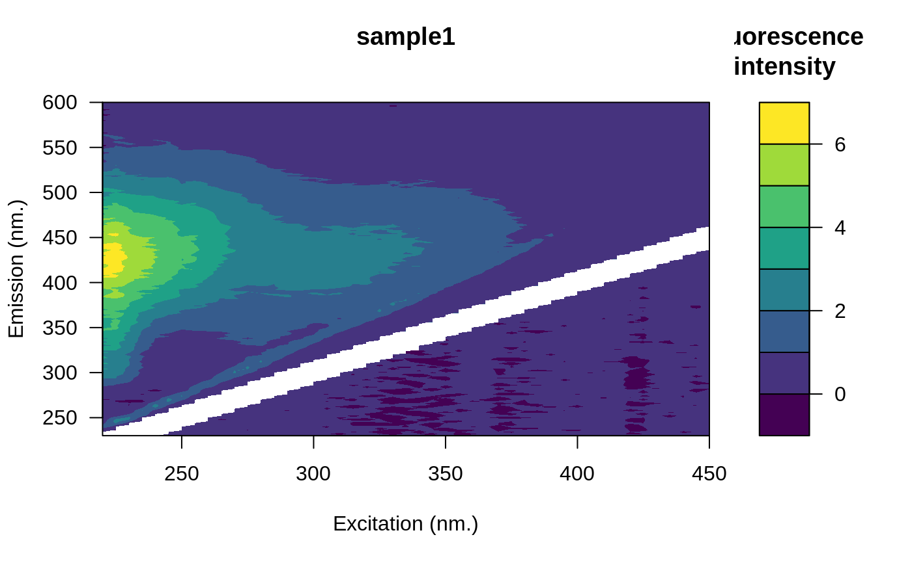
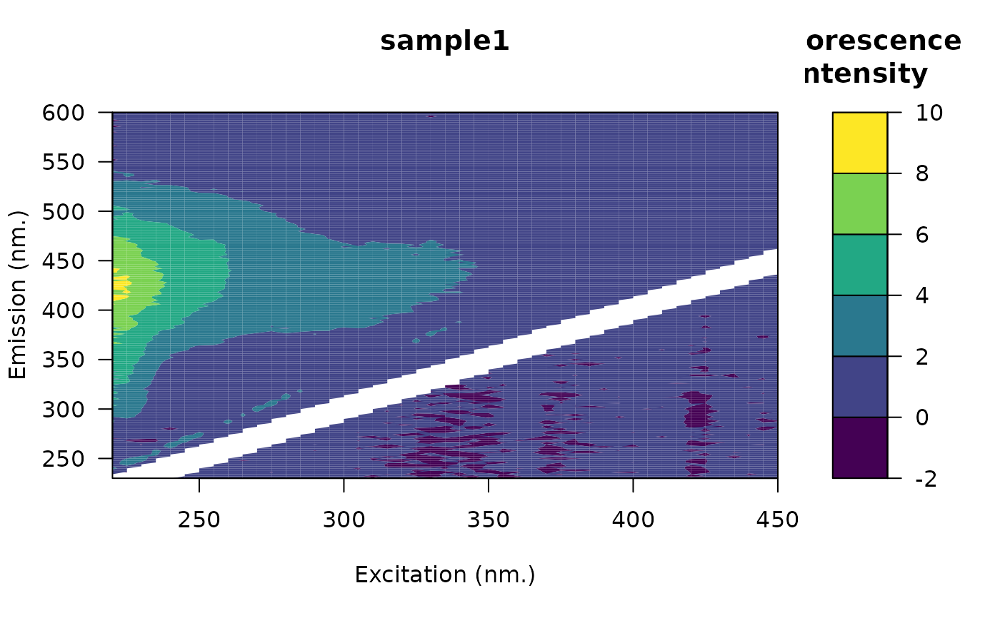

Inner-filter effect correction
Arguments
- eem
An object of class
eemlist.- absorbance
A data frame with:
- wavelength
A numeric vector containing wavelengths.
- ...
One or more numeric vectors containing absorbance spectra.
- pathlength
A numeric value indicating the pathlength (in cm) of the cuvette used for absorbance measurement. Default is 1 (1cm).
Value
An object of class eemlist.
An object of class eem containing:
sample The file name of the eem.
x A matrix with fluorescence values.
em Emission vector of wavelengths.
ex Excitation vector of wavelengths.
Details
The inner-filter effect correction procedure is assuming that fluorescence has been measured in 1 cm cuvette. Hence, absorbance will be converted per cm. Note that absorbance spectra should be provided (i.e. not absorption).
Names matching
The names of absorbance variables are expected to match those of the
eems. If the appropriate absorbance spectrum is not found, an uncorrected
eem will be returned and a warning message will be printed.
Sample dilution
Kothawala et al. 2013 have shown that a 2-fold dilution was required for sample presenting total absorbance > 1.5 in a 1 cm cuvette. Accordingly, a message will warn the user if total absorbance is greater than this threshold.
References
Parker, C. a., & Barnes, W. J. (1957). Some experiments with spectrofluorometers and filter fluorimeters. The Analyst, 82(978), 606. doi:10.1039/an9578200606
Kothawala, D. N., Murphy, K. R., Stedmon, C. A., Weyhenmeyer, G. A., & Tranvik, L. J. (2013). Inner filter correction of dissolved organic matter fluorescence. Limnology and Oceanography: Methods, 11(12), 616-630. doi:10.4319/lom.2013.11.616
Examples
library(eemR)
data("absorbance")
folder <- system.file("extdata/cary/scans_day_1", package = "eemR")
eems <- eem_read(folder, import_function = "cary")
eems <- eem_extract(eems, "nano") # Remove the blank sample
#> Removed sample(s): nano
# Remove scattering (1st order)
eems <- eem_remove_scattering(eems, "rayleigh")
eems_corrected <- eem_inner_filter_effect(eems, absorbance = absorbance, pathlength = 1)
#> sample1
#> Range of IFE correction factors: 1.0112 1.5546
#> Range of total absorbance (Atotal) : 0.0096 0.3832
#>
#> sample2
#> Range of IFE correction factors: 1.0061 1.3124
#> Range of total absorbance (Atotal) : 0.0053 0.2362
#>
#> sample3
#> Range of IFE correction factors: 1.016 2.3713
#> Range of total absorbance (Atotal) : 0.0138 0.75
#>
op <- par(mfrow = c(2, 1))
plot(eems, which = 1)

plot(eems_corrected, which = 1)

par(op)